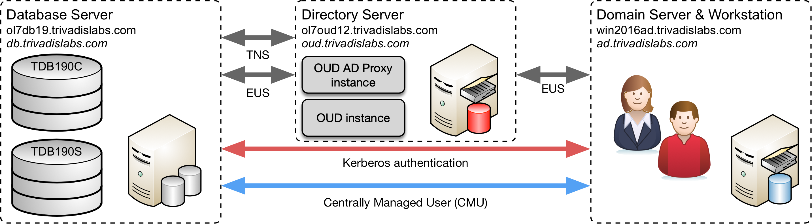

A couple of demo's for the TechEvent presentation EUS, Kerberos, SSL and OUD a guideline. Be aware, that the code can not be used copy/past in all environments due to limitations on the line breaks.
Demos are shown on an Oracle 18c Docker based database.
docker run --detach --name te2018_eusdb \
--volume /data/docker/volumes/te2018_eusdb:/u01 \
-e ORACLE_SID=TE18EUS \
-p 1521:1521 -p 5500:5500 \
--hostname te2018_eusdb.postgasse.org \
--dns 192.168.56.70 \
--dns-search postgasse.org \
oracle/database:18.3.0.0Create user and roles
CREATE ROLE tvd_connect;
GRANT CREATE SESSION TO tvd_connect;
GRANT select ON v_$session TO tvd_connect;
CREATE USER SOE_KERBEROS IDENTIFIED EXTERNALLY AS 'soe@POSTGASSE.ORG';
GRANT tvd_connect TO SOE_KERBEROS;| ID | Test | Comment |
|---|---|---|
| 1 | wieso | halt Here's a sentence with a footnote. [^1] |
| 2 | wieso | halt text ^2 |
| 3 | wieso | halt text |
| 4 | wieso | halt text |
| 5 | wieso | halt text |
etwas test dazwischen
| Version | Windows | HPUX | AIX | Solaris | Linux 64bit |
|---|---|---|---|---|---|
| RDBMS 18.1.0.0 | n/a | ||||
| RDBMS 18.2.0.0 | n/a | Ok | Ok | ||
| RDBMS 18.3.0.0 | n/a | NOk | |||
| RDBMS 18.3.0.0 | |||||
| RDBMS 18.1.0.0 |
Here's a sentence with a footnote. ^3
[^1]: This is the footnote.
ein Bild zum Anschauen
 Abb. 1: Architektur Lab Umgebung
Clean up and remove the old users.
Create 4 dedicated test user and grant them CREATE SESSION.
GRANT CREATE SESSION TO user_10g IDENTIFIED BY manager;
GRANT CREATE SESSION TO user_11g IDENTIFIED BY manager;
GRANT CREATE SESSION TO user_12c IDENTIFIED BY manager;
GRANT CREATE SESSION TO user_all IDENTIFIED BY manager;Reset all passwords using IDENTIFIED BY VALUES to explicitly set a particular password verifier.
ALTER USER user_10g IDENTIFIED BY VALUES '808E79166793CFD1';
ALTER USER user_11g IDENTIFIED BY VALUES 'S:22D8239017006EBDE054108BF367F
225B5E731D12C91A3BEB31FA28D4A38';
ALTER USER user_12c IDENTIFIED BY VALUES 'T:C6CE7A88CC5D0E048F32A564D2B6A7
BDC78A2092184F28D13A90FC071F804E5E
A09D4D2A3749AA79BFD0A90D18DEC5788D
2B8754AE20EE5C309DBA87550E8AA15EAF
2746ED431BF4543D2ABE33E22678';See what we do have in dba_users.
set linesize 160 pagesize 200
col username for a25
SELECT username,password_versions FROM dba_users WHERE username LIKE 'USER_%' ORDER BY 1;
USERNAME PASSWORD_VERSIONS
------------------------- -----------------
USER_10G 10G
USER_11G 11G
USER_12C 12C
USER_ALL 10G 11G 12CSee what we do have in user$.
set linesize 160 pagesize 200
col name for a20
col password for a20
col spare4 for a65
SELECT name,password,spare4 FROM user$
WHERE name LIKE 'USER_%' ORDER BY 1;
NAME PASSWORD SPARE4
---------- ----------------- --------------------------------------------
USER_10G 808E79166793CFD1
USER_11G S:22D8239017006EBDE054108BF367F225B5E731D12C
91A3BEB31FA28D4A38
USER_12C T:C6CE7A88CC5D0E048F32A564D2B6A7BDC78A209218
4F28D13A90FC071F804E5EA09D4D2A3749AA79BFD0A9
0D18DEC5788D2B8754AE20EE5C309DBA87550E8AA15E
AF2746ED431BF4543D2ABE33E22678
USER_ALL BFD595809B6149CB S:804A87EA761505458FDED9B057A77FCF53DA3DDBD6
EDB168501EDF5C0B10;T:7950DF0D54DEA24F1764EBC
34A262D784E18F4292510B8A2E0D0F7ADFEC1C6F1E22
D841A9D91BAF0B9B05632F6D4898C6F4AE1EEF150933
9EBCE261A1F36E834A5E2DD9F1E772AB2D6413CCAB5E
B0B23Check what we do have in sqlnet.ora.
host grep -i ALLOWED /u00/app/oracle/network/admin/sqlnet.ora
#SQLNET.ALLOWED_LOGON_VERSION_CLIENT=12a
SQLNET.ALLOWED_LOGON_VERSION_SERVER=11
host sed -i "s|^SQLNET.ALLOWED_LOGON_VERSION_SERVER.*|SQLNET.ALLOWED_LOGON_VERSION_SERVER=11|" \
/u00/app/oracle/network/admin/sqlnet.ora
host sed -i "s|^SQLNET.ALLOWED_LOGON_VERSION_SERVER.*|SQLNET.ALLOWED_LOGON_VERSION_SERVER=12|" \
/u00/app/oracle/network/admin/sqlnet.ora
host sed -i "s|^SQLNET.ALLOWED_LOGON_VERSION_SERVER.*|SQLNET.ALLOWED_LOGON_VERSION_SERVER=12a|" \
/u00/app/oracle/network/admin/sqlnet.oraDo some login tests
SQL> connect user_10g/manager
ERROR:
ORA-01017: invalid username/password; logon denied
Warning: You are no longer connected to ORACLE.
connect user_11g/managerCheck the configuration scripts in sqlnet.ora.
grep -i -A 11 -B 2 "Kerberos Configuration" $TNS_ADMIN/sqlnet.ora
##########################################################################
# Kerberos Configuration
##########################################################################
SQLNET.AUTHENTICATION_SERVICES = (BEQ,KERBEROS5)
#SQLNET.AUTHENTICATION_SERVICES = (ALL)
SQLNET.FALLBACK_AUTHENTICATION = TRUE
SQLNET.KERBEROS5_KEYTAB = /u00/app/oracle/network/admin/urania.keytab
SQLNET.KERBEROS5_REALMS = /u00/app/oracle/network/admin/krb.realms
SQLNET.KERBEROS5_CC_NAME = /u00/app/oracle/network/admin/krbcache
SQLNET.KERBEROS5_CONF = /u00/app/oracle/network/admin/krb5.conf
SQLNET.KERBEROS5_CONF_MIT=TRUE
SQLNET.AUTHENTICATION_KERBEROS5_SERVICE = oracleCheck the configuration scripts in krb5.conf.
cat $TNS_ADMIN/krb5.conf
####krb5.conf DB Server
[logging]
default = FILE:/u00/app/oracle/network/log/krb5lib.log
kdc=FILE:/u00/app/oracle/network/log/krb5kdc.log
admin_server=FILE:/u00/app/oracle/network/log/kadmind.log
[libdefaults]
default_realm = POSTGASSE.ORG
clockskew=300
ticket_lifetime = 24h
renew_lifetime = 7d
forwardable = true
[realms]
POSTGASSE.ORG = {
kdc = mneme.postgasse.org
admin_server = mneme.postgasse.org
}
[domain_realm]
.postgasse.org = POSTGASSE.ORG
postgasse.org = POSTGASSE.ORGlookup hostname's and check DNS configuration
cat /etc/resolv.conf
# Generated by NetworkManager
search aux.lan postgasse.org
nameserver 192.168.56.70
nameserver 10.154.0.1nslookup mneme.postgasse.org
Server: 192.168.56.70
Address: 192.168.56.70#53
Name: mneme.postgasse.org
Address: 192.168.56.70
Name: mneme.postgasse.org
Address: 10.0.2.19nslookup te2018_eusdb.postgasse.org
Server: 192.168.56.70
Address: 192.168.56.70#53
Name: urania.postgasse.org
Address: 192.168.56.90Create a service principle in MS AD
Create the keytab file
ktpass.exe -princ oracle/te2018_eusdb.postgasse.org@POSTGASSE.ORG \
-mapuser te2018_eusdb.postgasse.org -pass manager \
-crypto ALL -ptype KRB5_NT_PRINCIPAL \
-out C:\u00\app\oracle\network\te2018_eusdb.keytab
Connect as kerberos User
Before you can start you may need a few things.
To type less you just have to define a few environment variables. Basically you will define the local Docker volume path, container name, container hostname and the OUD instance name.
export MY_CONTAINER="te2018_oud"
export MY_VOLUME_PATH="/data/docker/volumes/$MY_CONTAINER"
export MY_HOST="$MY_CONTAINER.postgasse.org"
export MY_OUD_INSTANCE="oud_adproxy"Just create a container without starting it. Adjust ports, base DN etc.
docker container create --name $MY_CONTAINER \
--volume $MY_VOLUME_PATH:/u01 \
-p 1389:1389 -p 1636:1636 -p 4444:4444 \
-e OUD_CUSTOM=TRUE \
-e BASEDN="dc=postgasse,dc=org" \
-e OUD_INSTANCE=$MY_OUD_INSTANCE \
--hostname $MY_HOST \
--dns 192.168.56.70 \
--dns-search postgasse.org \
oracle/oud:12.2.1.3.180626Get and configure your create scripts out of the container from the OUD base. Alternatively you may also get it directly from GitHub oehrlis/oudbase.
Get the OUD EUS AD templates from the Docker container created before.
mkdir -p $MY_VOLUME_PATH/admin/$MY_OUD_INSTANCE
docker cp \
$(docker ps -aqf "name=$MY_CONTAINER"):/u00/app/oracle/local/oudbase/templates/create/oud12c_eus_ad_proxy \
$MY_VOLUME_PATH/admin/$MY_OUD_INSTANCE
mv $MY_VOLUME_PATH/admin/$MY_OUD_INSTANCE/oud12c_eus_ad_proxy $MY_VOLUME_PATH/admin/$MY_OUD_INSTANCE/create
mkdir -p $MY_VOLUME_PATH/admin/$MY_OUD_INSTANCE/etc
echo "manager" >$MY_VOLUME_PATH/admin/$MY_OUD_INSTANCE/etc/${MY_OUD_INSTANCE}_pwd.txtUpdate the 00_init_environment according to your environment. In particular the variables AD_PDC_HOST,AD_PDC_PORT, AD_PDC_USER, AD_PDC_PASSWORD and BASEDN, GROUP_DN, USER_DN
vi $MY_VOLUME_PATH/admin/$MY_OUD_INSTANCE/create/00_init_environment
sed -i -e "s|<PDC_HOSTNAME>|mneme.postgasse.org|g" \
$MY_VOLUME_PATH/admin/$MY_OUD_INSTANCE/create/00_init_environment
sed -i -e 's|<USER_DN>|CN=OUD\\ Admin,CN=Users,dc=postgasse,dc=org|g' \
$MY_VOLUME_PATH/admin/$MY_OUD_INSTANCE/create/00_init_environment
sed -i -e "s|<PASSWORD>|manager|g" \
$MY_VOLUME_PATH/admin/$MY_OUD_INSTANCE/create/00_init_environment
sed -i -e 's|^export BASEDN.*|export BASEDN="dc=postgasse,dc=org"|g' \
$MY_VOLUME_PATH/admin/$MY_OUD_INSTANCE/create/00_init_environment
sed -i -e 's|^export GROUP_OU.*|export GROUP_OU="ou=Groups,dc=postgasse,dc=org"|g' \
$MY_VOLUME_PATH/admin/$MY_OUD_INSTANCE/create/00_init_environment
sed -i -e 's|^export USER_OU.*|export USER_OU="ou=People,dc=postgasse,dc=org"|g' \
$MY_VOLUME_PATH/admin/$MY_OUD_INSTANCE/create/00_init_environment
sed -i -e "s|dc=example,dc=com|dc=postgasse,dc=org|g" \
$MY_VOLUME_PATH/admin/$MY_OUD_INSTANCE/create/00_init_environment
cat $MY_VOLUME_PATH/admin/$MY_OUD_INSTANCE/create/00_init_environmentLets go. Start the container and let the scripts create the OUD instance.
Enjoy the log and see how your OUD EUS AD proxy is created
dbca -configureDatabase -sourceDB $ORACLE_SID -registerWithDirService true \
-dirServiceUserName "cn=eusadmin" -dirServicePassword manager \
-walletPassword TVD04manager -silentCreate a global DB User
Define a EUS mapping to the shared schema created before
eusm createMapping database_name="$ORACLE_SID" \
realm_dn="dc=postgasse,dc=org" map_type=SUBTREE \
map_dn="ou=People,dc=postgasse,dc=org" schema=EUS_USERS \
ldap_host="te2018_oud.postgasse.org" ldap_port=1389 ldap_user_dn="cn=eusadmin" \
ldap_user_password="manager" eusm listMappings database_name="$ORACLE_SID" \
realm_dn="dc=postgasse,dc=org" \
ldap_host="te2018_oud.postgasse.org" ldap_port=1389 ldap_user_dn="cn=eusadmin" \
ldap_user_password="manager"Passwords are in docker logs or in the password files in $MY_VOLUME_PATH/admin/$MY_OUD_INSTANCE/etc
check EUS connection
SQL> conn dinu/manager
Connected.
SQL> @sousrinf
Database Information
--------------------
- DB_NAME : TDB122A
- DB_DOMAIN :
- INSTANCE : 1
- INSTANCE_NAME : TDB122A
- SERVER_HOST : urania
-
Authentification Information
----------------------------
- SESSION_USER : EUS_USERS
- PROXY_USER :
- AUTHENTICATION_METHOD : PASSWORD
- IDENTIFICATION_TYPE : GLOBAL SHARED
- NETWORK_PROTOCOL :
- OS_USER : oracle
- AUTHENTICATED_IDENTITY: DINU
- ENTERPRISE_IDENTITY : cn=Martin Berger,ou=People,dc=postgasse,dc=org
-
Other Information
-----------------
- ISDBA : FALSE
- CLIENT_INFO :
- PROGRAM : sqlplus@urania (TNS V1-V3)
- MODULE : SQL*Plus
- IP_ADDRESS :
- SID : 33
- SERIAL# : 17568
- SERVER : DEDICATED
- TERMINAL : pts/1
PL/SQL procedure successfully completed.